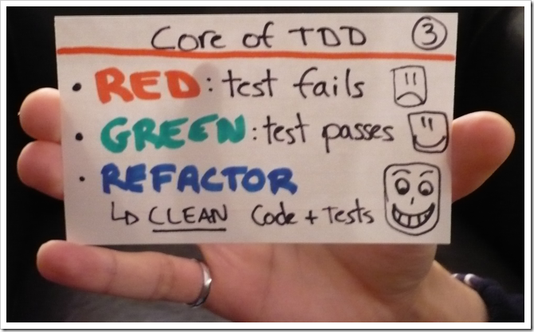

Sensibilisation aux méthodes agiles
Présentation
Gestion de projet
Approches traditionnelles prédictives et séquentielles- modèle en cascade
- modèle en V
Gestion de projet
4 variables
- coût (combien ?),
- délais (quand ?),
- périmètre (quoi ?),
- qualité
Modèle en cascade
Cycle en V

Cycle en V
Avantages :
- formalisation des fonctionnalités du produit
- définit clairement comment tout va se passer
Cycle en V
Inconvénients :
- possible effet tunnel
- peu adapté au changement
- risque de ne plus correspondre aux besoins qui évoluent dans le temps
Modèle en spirale (boehm)
Le marché est en constante évolution
- Diminuer l'effet tunnel en livrant souvent
- Permettre de s'adapter pendant la phase de réalisation

17 personnes en 2001
|
Kent Beck Mike Beedle Arie van Bennekum Alistair Cockburn Ward Cunningham Martin Fowler |
James Grenning Jim Highsmith Andrew Hunt Ron Jeffries Jon Kern Brian Marick |
Robert C. Martin Steve Mellor Ken Schwaber Jeff Sutherland Dave Thomas |
Manifeste pour le développement Agile de logiciels
Agile manifesto4 valeurs
Les individus et leurs interactions plus que les processus et les outils
Des logiciels opérationnels plus qu’une documentation exhaustive
La collaboration avec les clients plus que la négociation contractuelle
L’adaptation au changement plus que le suivi d’un plan
Manifeste pour le développement Agile de logiciels
Nous découvrons comment mieux développer des logiciels
par la pratique et en aidant les autres à le faire.
Ces expériences nous ont amenés à valoriser :
Les individus et leurs interactions
plus que les processus et les outils
Des logiciels opérationnels
plus qu’une documentation exhaustive
La collaboration avec les clients
plus que la négociation contractuelle
L’adaptation au changement
plus que le suivi d’un plan
Nous reconnaissons la valeur des seconds éléments,
mais privilégions les premiers.
12 principes
Notre plus haute priorité est de satisfaire le client en livrant rapidement et régulièrement des fonctionnalités à grande valeur ajoutée.
Accueillez positivement les changements de besoins, même tard dans le projet. Les processus Agiles exploitent le changement pour donner un avantage compétitif au client.
Livrez fréquemment un logiciel opérationnel avec des cycles de quelques semaines à quelques mois et une préférence pour les plus courts.
Les utilisateurs ou leurs représentants et les développeurs doivent travailler ensemble quotidiennement tout au long du projet.
Réalisez les projets avec des personnes motivées. Fournissez-leur l’environnement et le soutien dont ils ont besoin et faites-leur confiance pour atteindre les objectifs fixés.
La méthode la plus simple et la plus efficace pour transmettre de l’information à l'équipe de développement et à l’intérieur de celle-ci est le dialogue en face à face.
Un logiciel opérationnel est la principale mesure d’avancement.
Les processus Agiles encouragent un rythme de développement soutenable. Ensemble, les commanditaires, les développeurs et les utilisateurs devraient être capables de maintenir indéfiniment un rythme constant.
Une attention continue à l'excellence technique et à une bonne conception renforce l’Agilité.
La simplicité – c’est-à-dire l’art de minimiser la quantité de travail inutile – est essentielle.
Les meilleures architectures, spécifications et conceptions émergent d'équipes autoorganisées.
À intervalles réguliers, l'équipe réfléchit aux moyens de devenir plus efficace, puis règle et modifie son comportement en conséquence.
Méthodes agiles
- Scrum
- Extreme Programming
- Crystal Clear
- Rapid Application Development
- Adaptive software development
Scrum
Ken Schwaber et Jeff Sutherland en 1995
Scrum (n) : un cadre de travail permettant de répondre à des problèmes complexes et changeants, tout en livrant de manière productive et créative des produits de la plus grande valeur possibleinspiré du papier "The New Product Development Game" - 1986 Takeuchi, Hirotaka and Nonaka, Ikujiro. traduction
Scrum
- 3 rôles, 5 événements, 3 artifacts
- une méthode itérative
- une méthode incrémentale
it's just common sense
Rôles
- Propriétaire du produit - Product Owner
- Équipe de réalisation
- ScrumMaster
Product Owner (PO)
- est le responsable du produit
- définit ses fonctionnalités
- les ordonne
Équipe de réalisation
- Pluridisciplinaire
- Auto-organisée
ScrumMaster
- garant de l'application de la méthode
- protège l'équipe des facteurs extérieurs
- facilite les événements scrum
- accompagne l'équipe dans son amélioration continue

ou
?
ScrumMaster
Product Owner
Manager
Événements
timeboxés
- Sprint
- Planification de Sprint
- Mêlée quotidienne
- Revue du Sprint
- Rétrospective de Sprint
Itération
Sprint
- une unité de temps dans laquelle l'équipe délivre un incrément du produit
Planification de Sprint
- l'incrément du produit est déterminé
- les items de l'itération sont explicités et estimés
Mêlée
(Daily Scrum Meeting)
- quotidien
- 15 minutes
- 3 questions
- Qu'est-ce que j'ai fait depuis le dernier daily ?
- Qu'est-ce que j'ai l'intention de faire d'ici le prochain daily ?
- Qu'est-ce qui me bloque ?
- Point de synchronisation d'une équipe auto-organisée
Revue de Sprint
- l'incrément est montré au Product Owner
- l'équipe reçoit des retours sur cet incrément
Rétrospective
- L'équipe s'interroge sur ce
- qui a bien fonctionné ?
- qui n'a pas fonctionné ?
- ...
- Occasion de mettre en pratique l'amélioration continue
- revoir le mode de fonctionnement de l'équipe
- prendre des actions ou décisions d'équipe
- ...
Événements renommés
timeboxés
- Itération
- Planning
- Mêlée
- Point de visibilité des développements
- Rétrospective


Artifacts
- Product backlog
- Sprint backlog
- Incrément
Product Backlog
Carnet de Produit
Ensemble des items (histoires utilisateurs) ordonnés définissant le produit sous la responsabilité du POProduct Backlog
Sprint Backlog
Carnet de Sprint
- Ensemble des items (histoires utilisateurs) planifiées pour une itération
- sous la responsabilité de l'équipe de développement
Sprint Backlog
Incrément
Ensemble de tous les items du backlog product terminés pendant l'itération additionné de tous les items terminés des sprints précédents.Comment cela fonctionne ?
- Expression du besoin :
- histoires utilisateurs (User Story, item)
- découpées en tache si besoin
- Prévisionnel :
- basé sur le constat : Burndown Chart et calcul de la vélocité
Histoires utilisateurs
INVEST
- Indépendante des autres
- Négociable initialement, plutôt qu'un engagement ferme
- Verticale, ou ayant de la valeur en soit
- Evaluée en termes de complexité relative
- Suffisamment petite (en anglais Small)
- Testable en principe, ce qu'on vérifie en écrivant un test
Histoires utilisateurs
5 pts
Test d'histoire fonctionnelle
Je vérifie que dans la base des avis que l'acheteur X a bien donné un avis sur le livre Y
TaskBoard
TaskBoard
Vélocité
A la fin d'une itération, l'équipe additionne les estimations associées aux user stories qui ont été terminées au cours de cette itération.Ce total est appelé vélocité.
Elle permet valider ou réviser la planification de l'ensemble du projet.
Definition of Done
une liste de critères génériques qui conditionnent le fait de pouvoir considérer un incrément comme "fini"
Definition of Done
(exemples)
Definition of Done
(exemples)
- code source commité
- code source versionné
- fonctionnalité testée
- code source livré dans un environnement de test
- fonctionnalité documentée
- ...
Vélocité
Vélocité
Extreme Programming
Kent Beck, Ward Cunningham et Ron Jeffries
Valeurs
- Communication
- Simplicité
- Feedback
- Courage
- Respect
Pratiques XP
- Client sur site
- Planning poker
- Petites livraisons
- Utilisation de métaphores
Pratiques XP
- Rythme soutenable
- Tests unitaires
- Tests de recette (ou tests fonctionnels)
- Intégration continue
Pratiques XP
- Conception simple
- Refactoring (ou remaniement du code)
- Appropriation collective du code
- Convention de nommage
- Programmation en binôme
Qu'est-ce qui se cache derrière ces acronymes ?
- KISS
- SRP
- TDD
- YAGNI
- DRY
Bonnes pratiques
- KISS : Keep It Simple, Stupid
- SRP : Single Responsability Principle
- TDD : Test Driven Development
- YAGNI : You ain't gonna need it (vous n'en aurez pas besoin)
- DRY : Don't repeat yourself
Changer d'attitude
face aux problèmes
Changer d'attitude
face aux problèmes
- Essayer essayer essayer, persévérer
- Se tromper : échouer c'est réussir
- Différer la décision
- Demander de l'aide
- Règle du boy-scout
"Laissez le campement plus propre que vous ne l'avez trouvé en arrivant"
Pratiques d'ingénieries
- Tests unitaires
- Intégration Continue
- Test Driven Development - Red / Green / Refactor
- Design incrémental
- Binomage, revue de code
- Lire du code, revue de code
- S'entrainer (kata, randori, open source)
- time-boxing, pomodoro
- déploiement continu
Test Driven Development
- créer un seul test unitaire décrivant un aspect du programme
- s'assurer, en l'exécutant, que ce test échoue pour les bonnes raisons
- écrire juste assez de code, le plus simple possible, pour que ce test passe
- remanier le code autant que nécessaire pour se conformer aux critères de simplicité
- recommencer, en accumulant les tests au fur et à mesure
Test Driven Development

Les outils
- Editeurs : IntelliJIDEA, emacs, vim
- Tests Unitaires: bibliothèques xUnit, rspec
- Integration Continue : jenkins, cruise control, teamcity, travis, wercker
- Couverture/Revue de code : cobertura, emma, clover
- Tests fonctionnels : selenium, fitnesse, ...
Maitriser les outils
On connaît l'artisan à ses outils.Proverbe cité dans "le mythe du mois-homme
- S'imprimer les refcards des outils utilisés (intellijIDEA)
- IC : jenkins, cruise control, teamcity, travis, wercker
- Couverture/Revue de code : cobertura, emma, clover
- Tests fonctionnels : selenium, fitnesse, ...
Manifeste pour le développement Agile de logiciels
Nous découvrons comment mieux développer des logiciels
par la pratique et en aidant les autres à le faire.
Ces expériences nous ont amenés à valoriser :
Les individus et leurs interactions
plus que les processus et les outils
Des logiciels opérationnels
plus qu’une documentation exhaustive
La collaboration avec les clients
plus que la négociation contractuelle
L’adaptation au changement
plus que le suivi d’un plan
Nous reconnaissons la valeur des seconds éléments,
mais privilégions les premiers.
Quelques références en ligne
Livres sur les méthodes
- “Le mythe du mois-homme” Frederick P. Brooks
- “Agile Retrospectives: Making Good Teams Great” Esther Derby and Diana Larsen
- “Agile Project Management with Scrum” Ken Schwaber
- “Extreme Programming Explained: Embrace Change” Kent Beck
- “Gestion de projet eXtreme Programming” Jean-Louis Bénard, Laurent Bossavit, Régis Médina, Dominic Williams
Pratiques d'ingénieries
- “Clean Code” Robert C. Martin
- “Refactoring: Improving the Design of Existing Code” Martin Fowler, Kent Beck
- “Test Driven Development: By Example” Kent Beck
- “Practices of an Agile Developer” Venkat Subramaniam, Andy Hunt
- “DDD - Domain Driven Design” Eric Evans
Katas en ligne
- The Bowling Kata par Robert C. Martin
- Roman Numerals Kata in JavaScript par Marko Schulz
- Robozzle Kata in Haskell par Emmanuel Gaillot
En relation avec l'agilité (ou pas)
- Core Protocols Jim and Michele McCarthy
- Mouvement devops
- Lean software management
- Lean startup
Livres
- “Lean Startup”Eric Ries
- “La pratique du lean management dans l'IT” Marie-Pia Ignace, Christian Ignace, Regis Médina, Antoine Contal